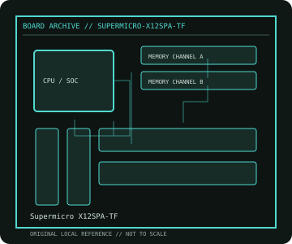

[ INDIVIDUAL COMPONENT // MOTHERBOARDS ]
Supermicro X12SPA-TF
Single-socket Intel Xeon W-3300 workstation board, 2021. This record documents the named model and its documented variants; confirm the PCB revision, submodel and firmware on the physical unit.

REVISION WARNING: Similar model names and PCB revisions may have different processors, connectors or firmware. Read the silkscreen and assembly code; use the support files for that exact board variant.
Specifications
| Catalog subcategory | Workstation and server boards |
|---|---|
| Exact model / era | Supermicro X12SPA-TF — Single-socket Intel Xeon W-3300 workstation board, 2021 |
| CPU and socket / SoC | One LGA4189 Intel Xeon W-3300 series processor; supported models and minimum BIOS per vendor CPU list |
| Chipset / platform | Intel C621A |
| Memory | Eight DDR4 ECC DIMM sockets, eight-channel; RDIMM/LRDIMM and maximum capacity depend on CPU and manual |
| Slots and connectivity | E-ATX; seven PCIe 4.0 x16 slots with CPU-lane allocation, M.2, SATA, dual 10GbE, dedicated IPMI, USB and VGA |
| Firmware | Supermicro BIOS plus distinct BMC firmware; X12SPA-TF-specific support package and CPU matrix. |
Compatibility and revision notes
LGA4189 Xeon W-3300 is not interchangeable with Xeon Scalable CPUs just because of the related socket family. Memory is eight-channel and CPU/BIOS-qualified.
Socket, connector shape and family branding alone do not establish compatibility. Verify the exact processor list, minimum BIOS, memory population table, power input, dimensions, and shared-lane behavior in the cited manual before installation.
Preservation and repair
Use the correct socket carrier and torque sequence; protect pin field and inspect CPU retention frame. Record BMC MAC, BIOS settings and PCIe riser/airflow configuration before removing the board.
For archival preservation, photograph the PCB, labels, connectors and included accessories before cleaning. Record serial/date codes, firmware versions, known faults, prior repairs and test conditions; use ESD-safe handling and do not power a board with loose conductive hardware beneath it.
Sources & further reading
- Supermicro X12SPA-TF — product/manual referenceModel-specific platform, board layout and interface reference.
- Supermicro X12SPA-TF — support and firmware resourcesSupport documentation; match the PCB revision, CPU support list and firmware release to the physical board.
Manufacturer/model documentation is the primary reference. Where vendor support is archived, match its revision notes to the board and do not cross-flash firmware from a similar product.